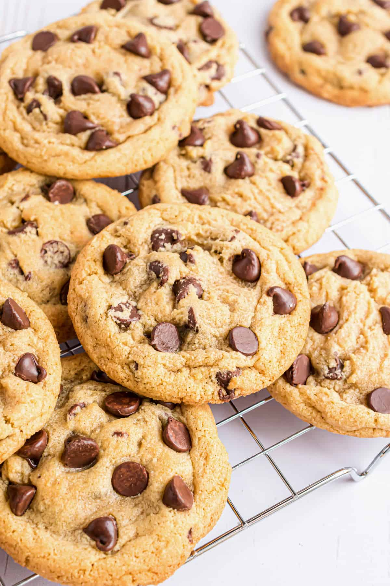

Chocolate chip cookies
Home

Description
Chocolate chip cookies are a classic treat loved by many. They are soft, chewy, and filled with delicious chocolate chips. Perfect for any occasion or just a sweet snack!
Ingredients
- 1 cup unsalted butter, softened
- 1 cup granulated sugar
- 1 cup packed brown sugar
- 2 large eggs
- 1 teaspoon vanilla extract
- 3 cups all-purpose flour
- 1 teaspoon baking soda
- 1/2 teaspoon salt
- 2 cups semisweet chocolate chips
Steps
- Preheat the oven to 350°F (175°C).
- In a large bowl, cream together the butter, granulated sugar, and brown sugar until smooth.
- Beat in the eggs one at a time, then stir in the vanilla extract.
- In a separate bowl, combine the flour, baking soda, and salt. Gradually add this to the wet ingredients and mix until well combined.
- Fold in the chocolate chips.
- Drop rounded tablespoons of dough onto ungreased baking sheets.
- Bake for 10-12 minutes or until the edges are golden brown.
- Allow cookies to cool on the baking sheet for a few minutes before transferring to wire racks to cool completely.